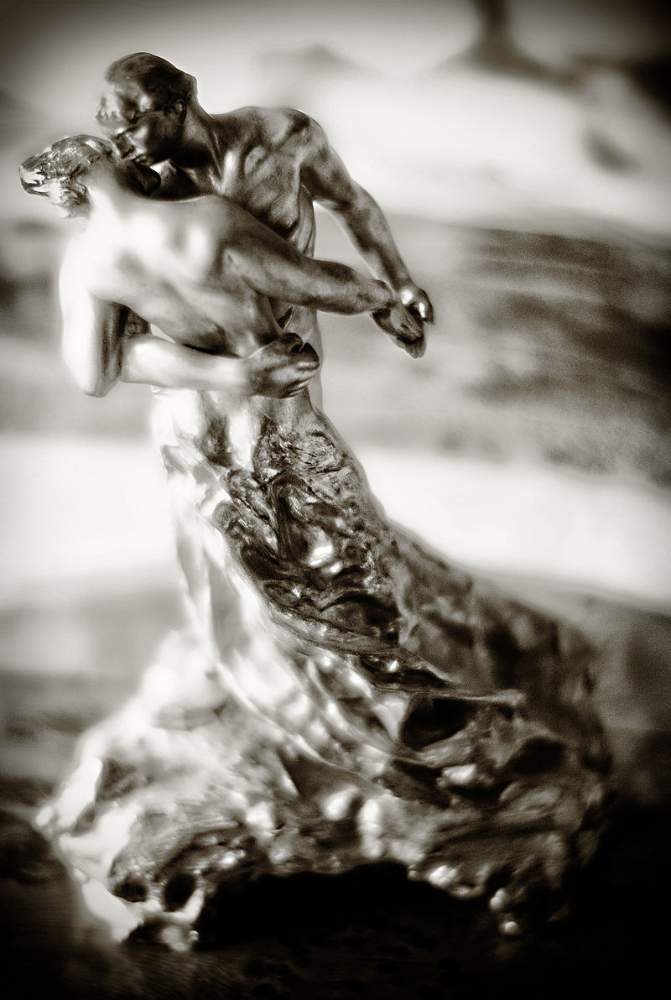

Do Not Follow, My Friends
Your Lifeline - the cumulative choices you made that affected your entire life,
must be precisely aligned to match who you are, so that you may learn.
This is not an easy thing,
but there can be no other.
We live in a world under constant erosion from Poverty,
Authenticity is a difficult path.
Stay safe, love yourself,
but you must also stand your ground.
What life is pressing you into,
and the path that you must be on for your wisdom sake;
Are likely to be some distance apart,
this is the tragedy of our modern age.
The complexity of life, will be pushing you away,
from the line you need to walk to learn and become wise.
The path that life is trying to press you into,
is almost truly random, it comes out of misery and chance.
The path mere life dictates includes lies and manipulations that you can't see at first,
people will use your innocence against you, to make their lives simpler.
When you follow, you fall into cogs of ravenous emergent machinery,
and this machinery exists, because, followers gather.
My Dear Friends, if you must,
then know that there is but one you serve.
The Wisest You, The Best You, The Most Brilliant You,
at the Greatest Age of Your Life, Your Golden Age of Wisdom.
The path that mere life dictates, is a melody out of tune,
you become a piano key, and life will keep pushing, non-stop.
But the path you dictate, is very unusual in deed,
because each step you take, adds to the previous.
And with only a few steps,
you are stepping higher, you are already building, up.
That is the same "up", that "Grow Up" uses,
your own step, followed by you own step, forward and up.
If you dare to throw caution into the wind,
it will bring you wisdom - you'll see.
But other than that, like a cat,
walk cautiously onward.
When things start adding up,
you will surpass your younger self.
And now, where you used to think: "And where am I actually going?",
you will see a road ahead, by subtle analogy to the road you've already traveled.
Where once you toyed with the question of "Who am I?",
you will now, see you.
You'll make little mistakes, and that is OK,
because you will have your path to fall back on.
And those mistaken tangents, will cradle you,
they will add, and refine your decision-making.
When you walk your own path,
you do not make big mistakes.
The little ones will teach about the bigger ones,
by subtle analogy.
Your own path,
is a great teacher.
So what is it like,
on that path?
I am very sorry to say, it is lonely,
but loneliness is correct.
Not until you find your other half,
will loneliness let go of you.
It is there to remind you,
that you can only make it half-way on your own.
Your own path,
is above all; clear.
There are no excuses,
nothing to sway you.
The air is crisp,
there is no smog.
Just,
a clear vision.
Even without any guarantees in life,
you will become stronger.
But, yes - no matter how beautiful you become,
Universe will do nothing to guarantee you, anything.
This,
is the Leap of Faith.
And the faith,
is in Your Greater Self.
Walk your own path, because in the first half of your life,
your own path is the only thing that can add to you.
Authenticity, is a law of the Universe,
it follows similar principles.
Walk your own path,
and expand.
The first steps are always clumsy,
I went to the museums.
A coffee shop is a bad idea,
because everyone is there.
But a museum is different,
it filters for kindness, somehow.
I went to the D.I.A
I was extremely lucky.
They were showing,
Auguste Rodin's work.
I understood it immediately, the secret of sculpture,
is to enlarge that part that holds the soul.
At the end,
they had The Waltz (possibly a large replica as it had more detail, this was some 13 years ago), that dancing couple by Camille Claudel.

I started crying,
her hand, had so much feeling in that gentle arch, there was so much touch.
That is life,
that is the path.
The path, where you cry out of beauty,
and not cry out of being lost.
And you have to create art,
art is about training yourself for success.
Learning,
by subtle analogy.
That's why you never finish,
there is no time for the art it self.
There is only time,
for learning life.
Learning by subtle analogy,
to the smaller Triumph, and Success.
Stick to a single subject,
until you fill it completely.
Now you can hang it up at the coffee shop,
but keep moving forward.
Do not Follow, My Friends,
there is nothing there to be found.
Nothing you find when you follow,
will add together to make a whole.
When it feels like you are surrounded by paths,
and there is nowhere to go, or you can't go into enough places.
That is an illusion,
all those paths are false.
Turn around,
slow down.
Go back to the last thing that moved you,
and fearlessly resume at that point.
The world may shake and shudder,
and there will be "Why?", and "How could you?", and "What is going on?".
All those cries,
are for the person that follows.
Each asking you to a different path,
and all those paths are mutually incompatible.
Do you see,
life wants you to merely be.
But you can be more,
you don't have to call it Growing Up, Courage, Authenticity or Growing Content of Character.
Call it, and appointment at D.I.A.
call it, a meeting at the UofM Museum of Natural History.
Begin keeping a Moleskine Journal,
use a pencil,
only draw what your heart sees,
and write as little as possible,
write to your older self,
explain to her why?
Find your center,
find your balance.
Lean on your Nucleus,
and push off to take your steps in your own direction.
Calm your hand,
slow your time.
There are decades ahead,
and you have to be seen.
Show yourself,
create future.
What others have, may shine,
but is not always gold they keep.
The younger we are,
the less wisdom we hold;
The less wisdom,
the more questions we should answer.
And questions combined with life,
make for a busy time in deed.
So slow down,
answer your questions - first.
All life is sacred,
all Lifelines equally matter.
But not all will arrive at their Golden Age of Wisdom,
without regrets.
So, please,
ask your older self what her regrets are.
And the higher you grow, the more you know, and which is more,
the more in harmony with your older-self, you'll be.